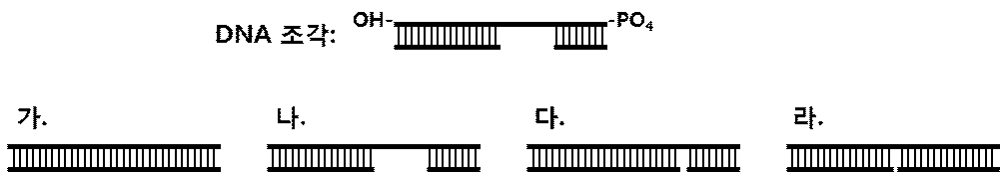

문제 5

[한국과학기술원(KAIST) 문항 정보 19]
1. 일반정보
유형
□ 논술고사 ☑ 면접 및 구술고사
전형명
학교장추천전형/고른기회전형
해당 대학의 계열(과목) /
문항번호
생명과학 / 문제2
모집요강에 제시한 출제
범위(과목명)
생명과학Ⅰ, 생명과학Ⅱ
출제 범위
과학과 교육과정
과목명
생명과학Ⅱ
핵심개념 및 용어
DNA 복제
예상 소요시간
5분
2. 문항 및 제시문
문
제
아래 그림과 같이 아래 가닥의 일부가 끊어진 DNA 조각이 있다. (위 가닥
DNA에 표시된 –OH와 -PO4는 각각 양쪽 말단의 수산기와 인산기를 의미함.
위 가닥과 아래 가닥 사이의 선은 염기 간 수소결합을 의미함.) (총 3점)
(1) 이 DNA 조각을 대장균 세포 안에 넣은 후 DNA 복제 관련 효소들이 작
용하였을 때 어떤 모양의 DNA가 될지 고르시오. (세포 내 DNA 분해 효소들
은 작용하지 않았다고 가정함.)
(2) DNA 중합 반응에 필요한 화학물질과 조건이 갖추어진 시험관에 이 DNA
조각과 대장균에서 순수 정제한 DNA 중합효소들 만을 넣어준 후 반응시켰을 때
어떤 모양의 DNA가 될지 고르시오.
(3) 대장균 세포 안과 시험관 내의 반응 결과물이 다른 이유를 설명하시오.
3. 출제 의도
DNA 복제 과정과 관여하는 효소의 기능에 대한 이해를 바탕으로 다양한 상황에서의
DNA 합성 결과에 대해 추론할 수 있는 능력을 평가한다.